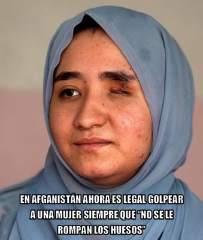

Este artículo es un análisis histórico, antropológico y didáctico sobre las condiciones de las mujeres en Afganistán. Toda mención a abusos, violencia, golpes, heridas, suicidio o explotación sexual, se realiza exclusivamente con fines críticos y didácticos, en un contexto de reflexión sobre sus causas históricas y culturales.


Sin duda, nacer mujer en Afganistán debe ser uno de los peores destinos para un ser humano. Como sabemos, el país está gobernado por un régimen teocrático fundamentalista islámico conocido como talibán, que ha estado dos veces en el poder: primero de 1996 a 2001, cuando fueron derrocados por fuerzas lideradas por Estados Unidos, y el segundo, a partir del 15 de agosto de 2021, cuando el régimen talibán recuperó el control, provocando la salida de las milicias internacionales.
En el primer período del régimen talibán (1996-2001) se impuso una interpretación extremista de la ley islámica, la sharía, de forma abrupta, siendo las mujeres obligadas a usar burka; se les prohibió trabajar fuera de casa, y la educación femenina fue clausurada casi por completo. Y el incumplimiento de estas normas resultaba en castigos físicos públicos por parte de la «policía de la moral».
En el segundo período (2021-presente), inicialmente el régimen prometió una versión «más moderada» para buscar reconocimiento internacional, pero en la práctica se fueron reinstaurando condiciones más severas. Según el informe de ONU Mujeres, se ha producido un «apartheid de género» que incluye la prohibición de cursar estudios secundarios y universitarios, el veto a trabajar en oenegés, y limitaciones estrictas para movilizarse sin acompañante masculino (mahram).
Actualmente, la visión dominante promovida desde el poder político-religioso, presenta a la mujer como un ser subordinado, cuya función principal es doméstica y reproductiva, y cuya autonomía debe estar tutelada por un varón (mahram). La mujer es un ser cuya presencia pública se considera potencialmente «perturbadora» del orden moral, y en ese marco ideológico, su cuerpo es algo que debe ocultarse, su movilidad debe controlarse, y hasta su voz debe ser considerada como algo a silenciar. Todo porque el sistema necesita mantener jerarquías rígidas para sostener su estructura de poder.
Y desacatar estas normas puede traer consecuencias especialmente graves a las mujeres; consecuencias que al parecer son cada vez más abusivas, a juzgar por la más reciente aprobación del último código penal que acaba de darse a conocer a mediados de febrero de 2026[1], el cual legaliza la violencia doméstica, permitiendo que los padres de familia golpeen a sus esposas e hijos, siempre que no les causen «fracturas o heridas abiertas» visibles, y la víctima tenga que presentar esas pruebas en un tribunal para que haya una condena —algo prácticamente imposible, dadas las múltiples restricciones que pesan sobre las mujeres en Afganistán. Además, las penas para los agresores son bajísimas (hasta 15 días de prisión en los peores casos), y muchas veces las víctimas deben presentarse en público acompañadas por su agresor para quejarse, lo cual disuade cualquier denuncia real[2].
A nosotros, como librepensadores laicos, hay algo que nos resulta imposible ignorar: cuando una ideología religiosa adquiere poder absoluto sobre un Estado, deja de ser una fe privada para convertirse en un sistema de control conductual masivo. Y Afganistán, bajo el liderazgo del emir de facto Hibatullah Akhundzada, militar y clérigo afgano, es hoy uno de los ejemplos más extremos de cómo una interpretación religiosa rígida puede institucionalizar la desigualdad y normalizar la violencia.
La historia de las mujeres afganas es sumamente triste. Antes del primer régimen talibán, al menos en las ciudades todavía podían vestirse con libertad, estudiar, trabajar, votar y participar en la vida pública. Pero a partir de 1996, la autonomía femenina se ha ido extinguiendo, sin que aún sepamos qué límite alcanzará. Aunque la pérdida no fue instantánea, sino progresiva: bajo el llamado Emirato Islámico, las mujeres comenzaron a ser obligadas a usar burka en público, se les prohibió estudiar y trabajar, y también salir de casa sin la compañía de un mahram (tutor masculino). La policía religiosa comenzó a vigilar su vestimenta y comportamiento, y los castigos eran físicos y públicos.
Ya en 2021 hubo algunos avances limitados, volviendo las mujeres a universidades, empleos y medios de comunicación. Pero en 2022, fueron obligadas a cubrir completamente su rostro y su cuerpo, las universidades fueron cerradas para ellas, se restringió casi totalmente el empleo femenino, y se les prohibió viajar sin acompañante masculino.
Pero en los últimos años ha sido peor, a partir de 2023 se prohibió a las mujeres afganas hablar en espacios públicos en ciertos contextos, y en 2026 se llega ahora a aprobar normativas que permiten el «castigo físico» doméstico, mientras no haya fracturas visibles. La llamada «policía moral» patrulla siempre las calles, mercados y transporte público, y las mujeres pueden ser detenidas por mostrar parte del rostro, por no ir acompañadas, por hablar con hombres, o por viajar solas. Y los castigos incluyen el arresto, multas, golpes o encarcelamiento.
Paradójicamente, en un sistema ultrarreligioso como éste, la mujer es convertida en una «tentación», mientras que la responsabilidad masculina desaparece. Y como resultado, se controla a la mujer para evitar confrontar la fragilidad moral masculina. Por supuesto, esto no es espiritualidad, es una estructura de defensa psicológica colectiva.
Pero sin duda, permitir el castigo físico doméstico siempre que no haya huesos rotos, envía un mensaje aterrador: significa que el dolor es aceptable, con tal de que no deje marcas visibles. Pero se trata de una violencia doméstica que genera en las víctimas trastornos depresivos graves, que pueden llevar hasta a intentos de suicidio. Sin duda, una religión que termina legalizando los golpes «moderados», ha cruzado la frontera entre norma moral y abuso estructural.
¿Pero por qué hace todo esto el régimen talibán? —Según ellos, se trata de un proyecto que busca crear lo que conciben como una sociedad «pura» y ordenada, conforme a su lectura del derecho religioso— aunque esto se traduce en severos casos de discriminación por género. Pero por otra parte, se trata de un sistema que cierra los ojos ante prácticas como «Bacha bazi», en que adolescentes varones son explotados sexualmente por hombres adultos poderosos. Y aunque no es política oficial talibán, ha sido un fenómeno social persistente.
El contraste es brutal: mujeres recluidas por «honor» y una moral pública obsesionada con los velos, pero a la vez niños explotados por poderosos. ¿Qué clase de pureza moral es ésta? —Obviamente no es pureza, es hipocresía institucionalizada. Es un sistema ideológico cerrado que penaliza la disidencia, elimina el pensamiento crítico, y confunde obediencia con virtud y control con moralidad. Y cuando religión y Estado se fusionan sin límites, desaparece la capacidad correctiva de la crítica racional.
Ante toda esta injusticia es legítimo preguntarse por qué no existen mecanismos internacionales capaces de frenar esta regresión de derechos humanos. Y es que la soberanía estatal, la geopolítica y el agotamiento diplomático han dejado a millones de mujeres atrapadas en un laboratorio de ingeniería social teocrática. Pero el hecho de que algo sea «legal» no lo hace ético. Ni que sea «religioso» lo hace sano. Ni que sea «tradicional» lo hace moral.
Lo cierto es que cuando una niña crece escuchando que su voz es haram, es pecado, que su rostro es vergüenza, que su cuerpo merece corrección física, y que su autonomía es desobediencia, no estamos hablando sólo de derechos humanos. Estamos hablando de destrucción sistemática de la identidad.
La historia y los hechos actuales nos demuestran que cuando la religión toma el control total, cuando se convierte en ley absoluta, no sólo tiende a producir supresión del pensamiento crítico y desigualdad de género institucional, sino que puede llegar hasta castigos corporales legitimados. Y cuando se permite que una doctrina incuestionable sustituya a la razón y a los derechos individuales, el resultado no es un orden moral. Es miedo, control y sufrimiento. Lamentablemente hoy, en ese experimento social forzado, quienes pagan el precio más alto son las mujeres.
[Godless Freeman]
Comentarios
Comments powered by Disqus